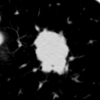
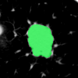
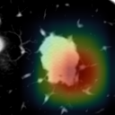

MICCAI Educational Challenge 2026 · From Pixels to Patients
Seven interpretability methods answer that question. This tour works through them one at a time on a single screening‑CT nodule, scored for malignancy by a published model, and ends by scoring all seven against the radiologist's mask.



The scan above is the running example for the whole tour: a screening‑CT nodule crop from LUNA25, scored for malignancy by JSC, the joint segmentation and classification baseline published by Ching‑Yuan Yu in bowang‑lab. Every layer below shows its real activation maps, not a schematic. Point at any layer to enlarge it and unfold its channels.
Real activations for case 203125_1 · turbo-coloured, contrast-stretched per channel · point at a layer to expand its top channels.
Each block is a layer, drawn to scale: the face is the spatial resolution, the depth is the channel count. Resolution shrinks as channels grow. Drag to orbit.
Real PlainConvUNet + FPN classification head from the published JSC fold‑3 checkpoint · shapes are channels×D×H×W · the CAM tap is the block tinted red
Walk one CT volume through the network, stage by stage. Hit Play to run it, or step through with the arrows and the stage rail. Drag the scene to orbit it. Every plane is an exported feature-map channel, turbo-coloured and contrast-stretched per channel so the sparse post-ReLU activations show. Watch the conv_block tap light up: that is where all seven methods read.
One CT volume, walked through the network.
Top channels by mean activation
Activation distribution
Most activations sit near zero after ReLU. The long tail on the right is where the feature fires. Malignant cases push more mass into that tail at the conv_block tap.